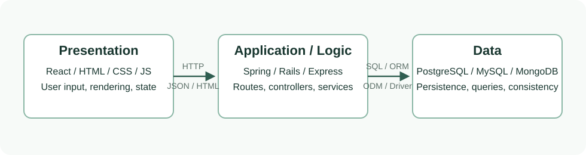

1. Web 应用的基础词汇
CS615 的大多数题都在问同一件事：用户在浏览器里做一个动作后，请求如何进入服务器，服务器如何处理业务规则，数据如何存取，最后结果如何回到页面。下面这些词是后面所有章节的地基。
| 词 | 从零理解 | 小例子 |
|---|---|---|
| Client / Browser | 用户实际操作的程序。浏览器负责显示网页、运行前端 JavaScript、向服务器发请求。 | Chrome 打开购物网站并点击“结账”。 |
| Frontend | 用户看得见、点得到的部分，包括页面布局、按钮、表单、交互和部分状态。 | React 页面显示订单列表和搜索框。 |
| Server / Backend | 用户看不见但真正处理规则的部分。它接收请求、检查权限、运行业务逻辑、读写数据库。 | Express 接收 POST /orders 并创建订单。 |
| Database | 长期保存数据的系统。服务器重启后，数据库里的订单、用户和商品仍然存在。 | PostgreSQL 保存 receipts；MongoDB 保存 JSON-like documents。 |
| Request / Response | 浏览器向服务器发 request；服务器处理后发 response 回来。 | 浏览器请求 GET /products，服务器返回产品 JSON。 |
| API | Application Programming Interface。这里通常指前端和后端约定好的“接口地址 + 数据格式”。 | GET /api/orders/15 返回第 15 号订单。 |
| JSON | 一种轻量数据格式，很像 JavaScript object，常用于前后端传数据。 | {"id":15,"total":90} |
| Business Logic | 业务规则，不是页面样式也不是数据库本身。例如折扣、权限、库存、订阅规则。 | 订单超过 1000 欧给 premium user 打九折。 |
| Framework | 帮你组织项目的工具和规则。它规定常见文件结构和写法，减少重复工作。 | Rails、Spring Boot、Express、React。 |
常见英文缩写先过一遍
CS615 试卷喜欢直接写缩写。先把它们翻译成人话，后面再看到就不会卡住。
| 缩写 | 全称 | 人话解释 |
|---|---|---|
| HTTP | HyperText Transfer Protocol | 浏览器和服务器传网页/数据的规则。 |
| API | Application Programming Interface | 前端调用后端的约定入口，例如某个 URL 返回某种 JSON。 |
| URL | Uniform Resource Locator | 网页或 API 的地址。 |
| JSON | JavaScript Object Notation | 前后端常用的数据格式，看起来像 JavaScript object。 |
| MVC | Model-View-Controller | 把数据、页面、控制流程拆开的代码组织方式。 |
| CRUD | Create, Read, Update, Delete | 对数据最基本的四种操作：增、查、改、删。 |
| SQL | Structured Query Language | 关系型数据库常用的查询语言。 |
| NoSQL | Not only SQL | 非传统表格型数据库的统称，例如文档数据库 MongoDB。 |
| SPA | Single Page Application | 主要靠 JavaScript 在一个页面里切换内容的应用。 |
| CI/CD | Continuous Integration / Continuous Delivery or Deployment | 自动构建、测试、发布代码的一套流程。 |
2. 三层架构和 Full-Stack 的基本分工
Full-stack application 不是“前端加后端”这么简单。考试里要把职责分清楚：前端负责用户界面和交互，服务器负责业务逻辑、认证和 API，数据库负责持久化、查询和一致性。持久化的意思是数据会被长期保存；一致性的意思是系统不会出现互相矛盾的数据，例如一个收据总价和商品明细对不上。三层架构把这些职责整理成 Presentation、Application/Logic、Data 三层。

| 层 | 主要职责 | 常见技术 | 考试答法关键词 |
|---|---|---|---|
| Frontend / Presentation | 显示界面、收集用户输入、处理客户端状态、调用 API | HTML, CSS, JavaScript, React | UI, user interaction, rendering, accessibility |
| Server / Application Logic | 路由请求、执行业务规则、认证授权、调用数据库或外部服务 | Node.js/Express, Rails, Spring Boot | routes, controllers, services, validation |
| Database / Data | 存储数据、执行查询、保证重要数据不互相矛盾，或提供灵活文档模型 | PostgreSQL, MySQL, MongoDB | persistence = 长期保存；query = 查询；schema = 数据结构规则 |
CRUD 和 HTTP 动作
CRUD 是 Web 应用最基础的数据生命周期：创建、读取、更新、删除。REST API 常用 HTTP verbs 来表达这些动作。
| CRUD | 含义 | 常见 HTTP verb | 例子 |
|---|---|---|---|
| Create | 新增资源 | POST | POST /orders 创建订单 |
| Read | 读取资源 | GET | GET /orders/15 查看订单 |
| Update | 修改资源 | PUT / PATCH | PATCH /orders/15 修改地址 |
| Delete | 删除资源 | DELETE | DELETE /orders/15 删除订单 |
3. SQL / NoSQL 的选择取决于数据形状和出错代价
2024 和 2025 都考过 SQL 与 NoSQL。不要把答案写成“SQL 老，NoSQL 新”。更好的判断方法是先问：这份数据像表格还是像一份灵活文档？数据之间有没有清晰关系？如果写入过程中出错，代价有多高？
先把数据库术语拆开
| 术语 | 不假设基础的解释 | 为什么考试会用到 |
|---|---|---|
| Schema | 数据的固定格式规则。比如收据必须有 receipt number、date、total，每个 item 必须有 name、quantity、price。 | 如果题目里的数据格式稳定、字段规则清楚，通常支持选 SQL。 |
| Relation / 外键 | 数据之间的连接关系。比如一个 customer 可以有很多 receipts，一个 receipt 可以有很多 items。 | 关系清楚、需要 join 查询时，SQL 通常更自然。 |
| Transaction / 事务 | 一组必须一起成功或一起失败的操作。比如创建收据和扣库存，不能只成功一半。 | 订单、付款、收据这类题目通常要强调事务。 |
| Consistency / 一致性 | 系统里的数据不互相打架。比如收据总价是 30，但三件商品加起来是 25，这就是不一致。 | 交易历史、收据、账户余额通常需要强一致性。 |
| Join | 把多张表按关系合起来查。比如查某个顾客的所有收据，再查每张收据的商品明细。 | 关系型数据常需要 join，所以 SQL 更方便。 |
| Horizontal scaling | 不是买一台更强的机器，而是加更多机器一起分担数据和请求。 | 高流量、海量事件、分布式系统常提到 NoSQL 扩展。 |
ACID 是什么
ACID 是数据库事务的四个安全承诺。它听起来抽象，但可以用“创建一张收据”理解：系统不能保存半张收据，不能让总价和明细对不上，不能让两个操作互相踩踏，保存成功后不能突然丢失。
| 字母 | 意思 | 收据例子 |
|---|---|---|
| A - Atomicity | 原子性：一组操作要么全部成功，要么全部失败。 | 收据、商品明细、库存扣减不能只保存其中一部分。 |
| C - Consistency | 一致性：操作前后都要满足数据规则。 | receipt total 必须等于 item prices 加总。 |
| I - Isolation | 隔离性：同时发生的操作不能互相干扰。 | 两个员工同时改同一张收据，不应产生混乱结果。 |
| D - Durability | 持久性：一旦系统说保存成功，数据就应该留下来。 | 用户付款后，即使服务器重启，收据也不能消失。 |
| 维度 | SQL / Relational | NoSQL / Non-relational |
|---|---|---|
| 数据模型 | 像 spreadsheet：表、行、列、外键，格式规则清楚 | 像 JSON 文件夹：每条记录可以是一份文档，格式可以更灵活 |
| 适合数据 | 订单、收据、用户、交易、库存等结构化关系 | 日志、内容、用户行为事件、灵活 JSON 文档 |
| 一致性 | 适合“不能保存一半、不能互相矛盾”的数据，例如付款和收据 | 适合更灵活或更大量的数据；有些系统会接受短时间内不同副本不完全同步 |
| 扩展 | 常见做法是升级机器或加读副本；复杂关系查询强 | 常见做法是把数据分到多台机器；大量写入和分布式场景常见 |
| 考试选择句 | 当数据结构稳定、关系清晰、出错代价高时选 SQL | 当数据格式变化快、数量很大、每条记录更像独立文档时选 NoSQL |
经典场景：记录顾客购物习惯
题目给出的数据包括 customer、items、price、date、unique receipt number。这些信息天然像订单系统：顾客、收据、商品、价格和日期之间有清晰关系。收据数据还很怕“只存了一半”：如果保存了收据号但没有保存商品明细，或者总价和明细对不上，系统就不可信。因此推荐 SQL 更稳。
I would choose an SQL database for this scenario. The data is structured: each customer has purchases, each purchase has a receipt number, a date, a price, and a set of purchased items. These entities can be represented cleanly using relational tables such as Customers, Receipts, ReceiptItems, and Products.
SQL is also suitable because receipt history is transactional data. In plain terms, this means several related records must be saved together correctly: the receipt number, the item rows, the prices, and the final total. We want integrity constraints, reliable joins, and ACID transactions so that totals, receipt numbers, and item records remain consistent.
A NoSQL database could be justified if the main requirement were high-volume clickstream behaviour or flexible event documents, but based on the question as written, the structured shopping records and consistency requirements make SQL the better default choice.
4. MVC 把数据、页面和控制流程拆开
MVC 是 CS615 最稳定的大题之一。它的核心不是背 Model、View、Controller 三个词，而是能解释一次请求如何从 route 进入 controller，如何调用 model/database，最后如何选择 view 或 JSON response。
先用一次点餐理解 MVC
可以把 MVC 想成餐厅点餐。View 像菜单和上菜窗口，用户通过它看信息、提交选择；Controller 像服务员，接单、判断该找谁处理、最后把结果带回来；Model 像厨房和库存系统，知道菜品、价格、库存，并真正改变数据。这个比喻不完美，但能帮你记住：controller 不应该自己炒菜，也不应该自己长期保存库存。
| MVC 部分 | 职责 | Rails 例子 | Spring / Express 对应 |
|---|---|---|---|
| Model | 代表领域数据和数据访问规则。领域数据就是系统真正关心的东西，例如订单、用户、商品。 | Order 继承 Active Record，映射到 orders table |
Spring entity/repository，Mongoose model |
| View | 把数据呈现给用户。渲染的意思是把数据变成用户能看见的 HTML 页面、组件或 JSON 结果。 | ERB template 或 JSON view | Thymeleaf, React UI, JSON response |
| Controller | 接收请求、读取参数、调用 model/service、选择 response。它负责协调，不应该塞满业务规则。 | OrdersController#create |
Spring controller, Express route handler/controller |
25 分 MVC 题的答案骨架
MVC separates a web application into Model, View, and Controller. The Model represents the application data and business entities, and usually interacts with the database. The View is responsible for presenting information to the user, such as HTML pages or JSON consumed by a frontend. The Controller receives HTTP requests, coordinates the work, and chooses which response to return.
For example, in a Rails shop application, a route such as POST /orders maps to OrdersController#create. The controller builds an Order model from form parameters, asks the model or a service to validate and save it, and then redirects to an order page or renders the form again. The view displays the result to the user.
The same pattern adapts to other environments. In Spring Boot, controllers use annotations such as @GetMapping, models are entities/repositories, and views may be Thymeleaf templates or JSON responses. In Express, routes map URLs to handlers, controllers coordinate request logic, and Mongoose or repository classes handle data.
Sample Rails controller 题：为什么违反 MVC 和 SRP
Sample Q3 的 controller 同时做折扣计算、保存订单、发邮件、记录 analytics、redirect/render。问题是 controller 太胖：它不只是控制流程，还包含业务规则和副作用，违反 Single Responsibility Principle。
| 问题 | 为什么不好 | 重构方向 |
|---|---|---|
| 折扣逻辑在 controller | 业务规则难复用、难单元测试 | 移到 DiscountService 或 Strategy pattern |
| 邮件和 analytics 直接调用 | 请求流程耦合外部副作用 | 移到 job/event/observer after order created |
| controller 承担太多职责 | 违反 SRP，难维护 | controller 只负责参数、调用服务、选择 response |
重构后，折扣逻辑可以用普通 unit test 独立测试，不需要构造完整 controller request；controller test 只检查它是否调用服务并处理成功/失败分支。
5. Node.js / Express / React 的高频问答
为什么用 Node.js 做 Web 项目
Node.js 的意思是：让 JavaScript 不只在浏览器里运行，也能在服务器上运行。它的优势来自 JavaScript runtime 和事件驱动 I/O。Runtime 可以理解为“代码运行的环境”；I/O 是 input/output，指读数据库、读文件、发网络请求这类等待外部结果的工作。Node 很适合这类等待很多、计算不重的 Web 服务。
它适合实时应用、API gateway、聊天、dashboard、快速原型和 JavaScript 全栈开发。答案里也要承认边界：CPU 密集型计算不是 Node 的天然强项。CPU 密集型指大量数学计算、图片视频处理这类一直占用处理器的任务，可能需要 worker、队列或其他服务。
| 优点 | 解释 |
|---|---|
| Non-blocking I/O | 等待数据库、文件或网络时，不会让整个服务器停在那里干等。服务器可以先处理其他请求。 |
| Event-driven | 事件驱动：事情完成时再回来处理。例如数据库查完后，再执行对应 callback 或 promise。 |
| Same language across stack | 前后端都可使用 JavaScript/TypeScript，团队共享模型和工具。 |
| NPM ecosystem | Express、Mongoose、JWT、testing、build tools 等生态丰富。 |
Callback 和代码输出题
Callback 是“先交代好，等事情完成后再执行”的函数。比如你设置一个定时器，相当于告诉 Node：几毫秒后请调用这个函数。同步代码会马上执行；定时器和 I/O 回调要等当前同步代码执行完后，再由 event loop 安排执行。Event loop 可以理解为 Node 的排队系统：它不断检查哪些异步任务已经完成，然后把对应 callback 拿出来执行。
因此 2023 的嵌套 setTimeout 代码输出是：
first
fifth
second
third
fourth
原因是 console.log("first") 和 console.log("fifth") 是同步代码，先执行。第一个 timeout 到期后打印 second，然后才注册内部 timeout；内部 timeout 再依次打印 third 和 fourth。
Chaining、routes、controllers、models
| 概念 | 答题解释 |
|---|---|
| Chaining | 把多个操作连续写在一起，例如 promise 的 .then().catch()，或 API 方法返回对象本身以继续调用。它让异步步骤或配置步骤更紧凑，但过度 chaining 会降低可读性。 |
| Routes | 定义 HTTP method + URL 到 handler/controller 的映射，例如 GET /api/orders/:id。 |
| Controllers | 处理 request/response，读取参数，调用 service/model，返回 HTML/JSON/status。 |
| Models | 表示数据结构和数据访问，例如 Mongoose schema/model 或 ORM entity。 |
React 和 vanilla HTML/CSS/JS 的比较
React 是用于构建用户界面的 JavaScript library。Library 是一组别人写好的工具，你按它的方式调用。React 的核心想法是把 UI 拆成 components。Component 就是一块可复用界面，例如按钮、导航栏、订单卡片。Props 是父组件传给子组件的数据；state 是组件自己记住、会变化的数据，例如搜索框内容或购物车数量。
SPA 是 Single Page Application，意思是用户看起来在一个网页里完成很多切换，页面主要通过 JavaScript 更新内容，而不是每点一次都整页刷新。React 很适合 SPA、dashboard、动态表单和状态变化频繁的应用。Vanilla HTML/CSS/JS 更轻、更直接，适合简单页面、小型交互和不需要复杂状态管理的站点。
| 维度 | React | Vanilla HTML/CSS/JS |
|---|---|---|
| 结构 | Component-based，复用性强 | 页面和脚本直接组织，简单直观 |
| 状态管理 | state/props/hooks 支持复杂 UI | 需要手动操作 DOM 和状态 |
| 适合场景 | SPA、dashboard、动态表单、MERN stack | 简单站点、静态页面、轻量交互 |
| 成本 | 需要 build tools 和学习曲线 | 依赖少，加载和维护可更简单 |
Componentization 的价值在于把 UI 拆成独立、可复用、可测试的小块。例如 OrderCard、SearchFilter、Navbar 可以独立开发，再组合成完整页面。
6. Accessibility、SEO 和 Web Security
Accessibility 和 CSS
Accessible website 指不同能力、设备和辅助技术用户都能使用的网站。辅助技术包括屏幕阅读器、键盘导航、放大显示等。CSS 不能替代语义化 HTML，但它能显著影响可读性、焦点、响应式布局和动画敏感性。语义化 HTML 指用正确标签表达内容意义，例如标题用 heading，按钮用 button，而不是所有东西都用 div。
| CSS 做法 | 为什么提升 accessibility |
|---|---|
| 足够颜色对比度 | 低视力用户能读清文本，避免浅灰字和低对比按钮。 |
清晰的 :focus 样式 | 键盘用户能知道当前焦点在哪里。 |
| 响应式布局和可缩放字体 | 移动端和放大页面时内容不重叠、不丢失。 |
| 不要只靠颜色传达信息 | 色盲用户仍能通过文字、图标、边框理解状态。 |
prefers-reduced-motion | 减少动画对眩晕或敏感用户的影响。 |
SEO：white-hat 与 black-hat
SEO 是 Search Engine Optimization，也就是让网站更容易被搜索引擎理解，并更可能出现在合适搜索结果里。White-hat SEO 改善真实内容和用户体验；black-hat SEO 试图欺骗搜索引擎，例如堆砌关键词、隐藏文字、买垃圾链接，可能导致排名惩罚。
| White-hat 建议 | 答题展开 |
|---|---|
| 高质量原创内容 | 围绕用户问题提供清晰、有用、更新的内容。 |
| 语义化 HTML 和 metadata | 合理使用 title、description、headings、alt text。 |
| 性能和移动端体验 | 快速加载、响应式设计、减少阻塞资源。 |
| 自然链接和站点结构 | 清晰 URL、内部链接、sitemap，避免 keyword stuffing 和隐藏文本。 |
SQL Injection 和 XSS
Web security 题要用“攻击原理 + 例子 + 防御”三段写。Injection 的意思是攻击者把本来应该只是普通输入的内容，变成了系统会执行的命令或脚本。
| 攻击 | 原理 | 简单例子 | 防御 |
|---|---|---|---|
| SQL Injection | 把用户输入拼进 SQL，使输入被当成 SQL 代码执行。SQL 是数据库查询语言。 | 登录框输入类似 ' OR '1'='1 试图绕过条件 |
Prepared statements / parameterized queries、输入验证、最小权限、不要拼接 SQL |
| XSS | 把恶意脚本注入页面，让其他用户浏览时执行。脚本在这里通常指 JavaScript。 | 评论区提交 <script>...</script> |
输出编码、sanitize input、CSP headers、HttpOnly cookies、避免直接插入 HTML |
7. HTTP 版本和 Cloud 选择
HTTP 1.0 到 HTTP 3 如何处理多个请求/响应
HTTP 是浏览器和服务器说话的协议。Protocol 可以理解为双方都遵守的通信规则。2023 Q1(a) 考过 HTTP evolution。答题重点不是背年份，而是说明浏览器和服务器如何处理多个 request/response，以及每一代如何减少等待和阻塞。
| 版本 | 处理多个请求/响应的方式 | 考试关键词 |
|---|---|---|
| HTTP/1.0 | 通常每个请求建立一个 TCP 连接，请求完成后连接关闭。多个资源需要多个连接，开销大。 | one request per connection, connection overhead |
| HTTP/1.1 | 默认 persistent connections，可以在同一连接上发送多个请求；pipelining 理论可用，但仍容易受 head-of-line blocking 影响。 | keep-alive, persistent connection, pipelining, HOL blocking |
| HTTP/2 | 在一个 TCP 连接上 multiplex 多个 streams，请求和响应可以交错传输，减少 HTTP 层面的阻塞。 | multiplexing, streams, binary framing |
| HTTP/3 | 基于 QUIC over UDP，连接建立更快，并减少 TCP 层 head-of-line blocking 对多个 stream 的影响。 | QUIC, UDP, connection migration, reduced HOL blocking |
Cloud computing model 选择
Cloud computing 指不用自己买和维护全部服务器，而是租用云服务商的计算、存储、数据库或平台能力。2023 的场景是：网站内容不多，但需要自建 cloud-based course subscriptions tool。因为需要部署自定义应用，同时不想自己管理底层服务器，推荐 PaaS 最自然。
| 模型 | 你管理什么 | 适合什么 |
|---|---|---|
| IaaS | Infrastructure as a Service。你租虚拟机，自己管理操作系统、runtime、应用和数据。 | 需要底层控制，但运维负担较高。 |
| PaaS | Platform as a Service。你主要上传应用和管理数据，平台帮你处理 runtime，也就是程序运行环境、部署和伸缩。 | 适合自定义 Web app、课程订阅系统、快速上线。 |
| SaaS | Software as a Service。你直接使用现成软件，只做配置。 | 适合现成工具，不适合题目中“开发自己的工具”。 |
I would recommend PaaS. The client needs a custom course subscription tool, so SaaS may be too restrictive, but the site does not sound infrastructure-heavy enough to justify managing virtual machines directly with IaaS.
PaaS lets the team deploy their own application while the provider handles much of the runtime, scaling, patching, and deployment infrastructure. This reduces operational work and helps the team focus on the course subscription features.
For security, privacy, and data ownership, the team must still consider where student data is stored, access control, backups, compliance, and vendor lock-in. For cost efficiency, PaaS can be cheaper early because it avoids hiring infrastructure specialists, but costs can grow with usage and platform-specific services.
8. Sample 新题型：架构、AI Agents、CI/CD 和系统可观察性
三层单体 vs 微服务
Sample Q1 用 FinTrack 比较传统 3-tier monolith 和 microservices。Monolith 是单体应用：很多功能在一个应用里一起开发、一起部署。Microservices 是微服务：把系统拆成多个小服务，例如用户服务、价格服务、通知服务，每个服务可以独立部署。
答题时先把两种方案映射到 Presentation、Application、Data 三层，再比较几个维度：scalability 是系统能不能承受更多用户或数据；performance 是速度和响应时间；resilience 是某部分坏了以后系统还能不能继续服务；development velocity 是开发和部署速度。
| 维度 | 3-Tier Monolith + Spring + PostgreSQL | Microservices + React SPA + Node services + NoSQL |
|---|---|---|
| Scalability | 扩展通常是整个应用一起扩。简单，但某个模块压力大时不够精细。 | 可以只扩展压力大的服务，例如价格更新服务。 |
| Consistency | PostgreSQL 适合交易历史，因为相关记录可以作为事务一起保存。 | NoSQL 更灵活，但多个服务各自存数据时，更难保证所有服务马上同步。 |
| Resilience | 部署简单，但单体里一个严重错误可能影响整个应用。 | 服务隔离更好，但网络失败、重试、数据同步更复杂。 |
| Velocity | 小团队早期开发快，调试容易，因为代码和部署都集中。 | 团队可并行开发，但需要更多 DevOps、接口文档和部署治理。 |
推荐答案可以选择“模块化单体优先，保留后续拆分空间”。模块化单体的意思是仍然部署成一个应用，但内部代码按模块清楚分开。FinTrack 需要可靠交易历史，早期团队更需要简单可靠的 PostgreSQL 和清晰模块边界；实时价格流可以用缓存、队列或单独服务逐步拆出。
AI Agents 在 SDLC 中的作用
AI agent 不是普通聊天机器人。这里指能连续执行多个开发步骤的 AI 工具，例如读需求、改代码、写测试、运行命令、根据错误继续修复。SDLC 是 Software Development Lifecycle，也就是软件从需求、设计、实现、测试、部署到维护的全过程。
| 优点 | 风险 | 平衡策略 |
|---|---|---|
| 加速样板代码、测试、重构、文档和部署脚本 | 可能生成难理解、难调试或不符合架构的代码 | 要求 PR review、测试、lint、安全扫描和人工架构检查 |
| 能执行多步骤工作流，减少上下文切换 | 可能误解需求或引入 security / privacy 风险 | 先写 PRD 和 acceptance criteria，再让 agent 实现 |
| 帮助 junior developer 学习和验证思路 | 过度依赖会削弱基本工程判断 | 开发者角色转向 orchestration、verification、debugging |
CI/CD 和 Observability
CI/CD 关注如何快速、可靠地交付。CI 是 Continuous Integration，意思是频繁合并代码，并自动构建和测试，尽早发现问题。CD 是 Continuous Deployment/Delivery，意思是把通过检查的代码自动或半自动发布到测试环境或生产环境。Observability 关注生产系统内部状态是否可理解：出问题时，我们能不能通过 logs、metrics、traces 看出发生了什么。
| 概念 | 定义 | 答题关键词 |
|---|---|---|
| CI | 频繁合并代码并自动构建、测试 | unit, integration, security tests, fast feedback |
| CD | 自动或半自动部署到 staging/production | deployment pipeline, rollback, canary release |
| Monitoring | 盯着已知指标，告诉你“是不是坏了”。 | alerts, dashboards, uptime, CPU, error rate |
| Observability | 帮你调查“为什么坏了”。Logs 是事件记录，metrics 是数字指标，traces 是一次请求经过哪些服务的路径。 | unknown failures, tracing, debugging production behaviour |
协同点：CI 阶段防止明显错误进入主干；CD 支持小批量发布和快速回滚；observability 发现真实用户环境中的延迟、错误和异常路径，再把这些信息反馈到下一轮测试和开发中。挑战包括工具成本、数据量、隐私、安全、团队 DevOps 能力和告警疲劳。
9. 根据题面识别答案结构
| 题面关键词 | 题型 | 答案结构 |
|---|---|---|
| frontend, database, servers, CRUD, SQL/NoSQL | 基础 full-stack 解释 | 定义 + 职责 + 例子 + 选择理由 |
| MVC, diagram, database to generate content | MVC 大题 | Model/View/Controller 定义 + request flow + web example + non-web/framework adaptation |
| Node.js interview, callback, chaining, output | Node / Express 问答 | 简短定义 + 同步/异步区别 + event loop 排队机制 + 输出顺序 |
| React, componentization, vanilla JS | React 论证题 | React 是什么 + component/props/state 是什么 + 用在哪 + 与 vanilla 的 trade-off |
| accessible website, CSS | Accessibility | 定义 + 3/4 个 CSS 做法 + 为什么帮助用户 |
| SEO, SQL injection, XSS | SEO / Security | 概念 + 例子 + 防御措施 |
| HTTP 1.0, HTTP 1.1, HTTP 2, HTTP 3 | HTTP evolution | 逐版本说明 multiple requests/responses 如何改进 |
| cloud model, subscriptions tool, security/privacy, cost | Cloud 选择题 | 推荐 PaaS + 解释为什么不是 IaaS/SaaS + strengths/weaknesses |
| microservices, AI Agents, CI/CD, Observability | Sample 新题型 | 先定义，再用维度比较，最后给 recommendation/trade-offs |
10. 2023-2025 和 Sample 考法地图
| 试卷 | Q1 | Q2 | Q3 | Q4 |
|---|---|---|---|---|
| 2023 Summer | HTTP evolution + MVC | NoSQL + Node + callback + output | Accessibility + React + Cloud | SEO + SQL injection + XSS |
| 2024 Summer | Full-stack roles + CRUD + SQL/NoSQL + database choice | SEO + SQL injection + XSS | Accessibility + React + componentization + stack | Node + chaining + Express MVC + output |
| 2025 Summer | Full-stack roles + CRUD + SQL/NoSQL + shopping database | MVC 25-mark essay | Node + React vs vanilla + code explanation | Accessibility + React merits |
| Sample | 3-tier monolith vs microservices | AI Agents in SDLC | Rails controller, MVC, SRP, refactor | CI/CD + Observability |
11. 高频 25 分题的写法
MVC 25 分题
- 先定义 MVC：Model、View、Controller 各自职责。
- 画或描述 request flow：Browser -> Route -> Controller -> Model/Database -> View/Response。
- 给一个 concrete web example，例如 Rails/Spring/Express 的订单创建。
- 说明为什么好：separation of concerns、maintainability、testability、parallel development。
- 说明可移植性：Rails、Spring、Express、desktop/mobile GUI 都能套类似思想。
方案比较题
- 先把两个方案映射到共同框架，例如 3-tier architecture。
- 按题目给的维度逐项比较，不要只写一边好。
- 每个维度都写 trade-off：scalability 是能不能承受更多用户/数据；resilience 是出故障时能不能继续服务；velocity 是开发和部署速度；consistency 是数据会不会互相矛盾；cost 是钱和人力成本。
- 最后给 recommendation，并明确你的假设。
Security 题
- 定义攻击是什么。
- 给一个简短例子。
- 写清楚防御：SQL injection 用 parameterized queries；XSS 用 output encoding、sanitization、CSP、HttpOnly cookies。
12. CS615 答案检查清单
- 解释题不要只背定义，要加 Web 场景例子。
- 比较题必须有维度和 trade-off。
- MVC 题必须有 request flow，并说明 Model/Controller/View 分工。
- 数据库选择题要根据数据结构、出错代价、查询方式和扩展方式来判断。
- Node 输出题先分同步代码和异步 callback，并说明 event loop 是排队执行异步结果的机制。
- React 题要讲 component、props、state、适用场景和成本。
- Accessibility/SEO/security 题要给具体做法，不要只写价值观。
- Sample 新题型要给 recommendation，并说明 human oversight 是人类审查和把关，observability feedback 是从生产日志/指标/链路中学到的信息，deployment trade-offs 是发布速度、风险和成本之间的取舍。